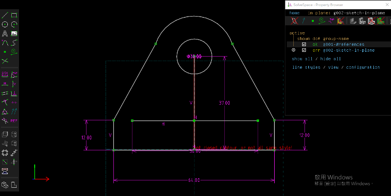
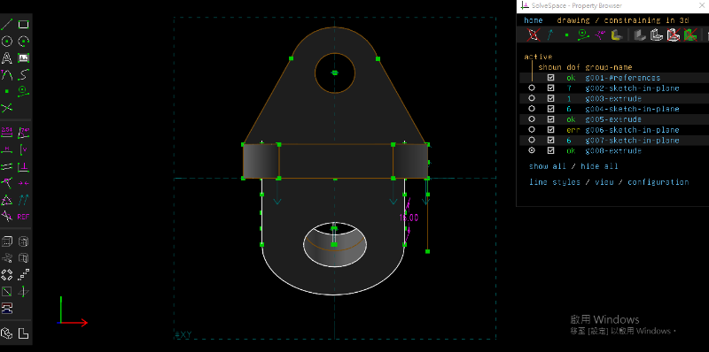

About <<
Previous Next >> HW1
Attendance
w1:介紹課程內容
w2:學習利用Codespaces和可攜系統維護作業倉儲
w3:學習使用solvespace進行零件繪圖


w4:學習讓網站能夠上傳slvs檔
用SciTE編譯器打開python_2025_lite\data\tmp\cad2024\cmsimde中的flaskapp.py
利用Ctrl+F搜尋7z找到這行
$('.prova').axuploader({url:'fileaxupload', allowExt:['jpg','png','gif','7z','pdf','zip','ttt','stl','txt','html','mp4','ipynb'],
finish:function(x,files)
在allowExt裡面面加上'slvs'，變這樣：
$('.prova').axuploader({url:'fileaxupload', allowExt:['jpg','png','gif','7z','pdf','zip','ttt','stl','txt','html','mp4','ipynb','slvs'],
finish:function(x,files)
儲存檔案之後再重開就可以在裡面上傳slvs檔案
在Codespaces中一樣是直接打開cmsimde中的flaskapp.py進行改寫即可
w5：學習用可攜系統編譯Solvespace
https://mde.tw/cad2024/content/Solvespace.html
w6：學習將檔案上傳s104並在線上瀏覽或下載
教學：https://mde.tw/cad2024/content/Servers.html
瀏覽：https://mdecad2024.github.io/hw-41023137/cmsimde/static/viewstl.html?src=https://s104.cycu.org/~41023137/base_plate.stl
下載：https://s104.cycu.org/~41023137/base_plate.stl
Model Color: Back Color1: Back Color2:
Render Mode:Definition:
var element = parameters[ i ].split( '=' ); var paramName = decodeURIComponent( element[ 0 ] ); var paramValue = decodeURIComponent( element[ 1 ] ); result[ paramName ] = decodeURIComponent( paramValue ); } return result; } return null; } openByGet(); // ]]>
2.學習用可攜系統開啟nx
下載 python_2025_lite.7z (428 MB, 解開壓縮後約 1.5 GB)
CAD 套件: Solvespace and Siemens NX
下載 NX2312 可攜 CAD 壓縮檔案 (1.85 GB, 解開後約 9 GB)
nx2312_Drafting.7z
nx2312_nxplot.7z
w9：填寫期中成績自評表
w10:隨堂考試Exam1
心得：雖然之前上課確實有學習使用solvespace畫了一些零件，不過這次的練習題目依然對我具有一定的難度，第一題光是前面在找俯視圖部分尺寸的距離就花了不少時間，還有想要從哪裡開始畫也花了一段時間，我認為最困難的應該是最後修圓角的部分，由於solvespace並沒有一鍵修圓角的功能，所以這部分需要自己調整，每個圓角至少要從兩個方向各切削一次，況且很多時候切下去會顯示紅色，來回調整了很多次才切得比較正常一些。第三題我事先想好了整體的繪製步驟，不過畫最久的反而是第一個平面上的那個洞，尺寸一直跑掉，後面就是找各種角度去抓草圖平面建模，還有最後那個六邊形的洞我是讓chatgpt幫我算出它的邊長和角度畫的。雖然課堂上似乎還沒教學wink要如何使用，不過我透過在網路上查詢影片及chatgpt的協助下，還是順利地學會了如何使用wink錄製並匯出成mp4檔案，然後nx之前上課的時候似乎也沒有教學要如何使用，所以我可能還要再花點時間摸索一下。
w11:校慶運動會停課
w12:學習使用nx測量尺寸
打開圖檔之後點擊分析選項，之後點左上角的尺圖案就可以量測距離
w11_hw:https://mde.tw/cad2024/content/Pinball.html
出席 (10%) - 自行舉證評分
自行利用 Github commits 提交記錄評分.
About <<
Previous Next >> HW1